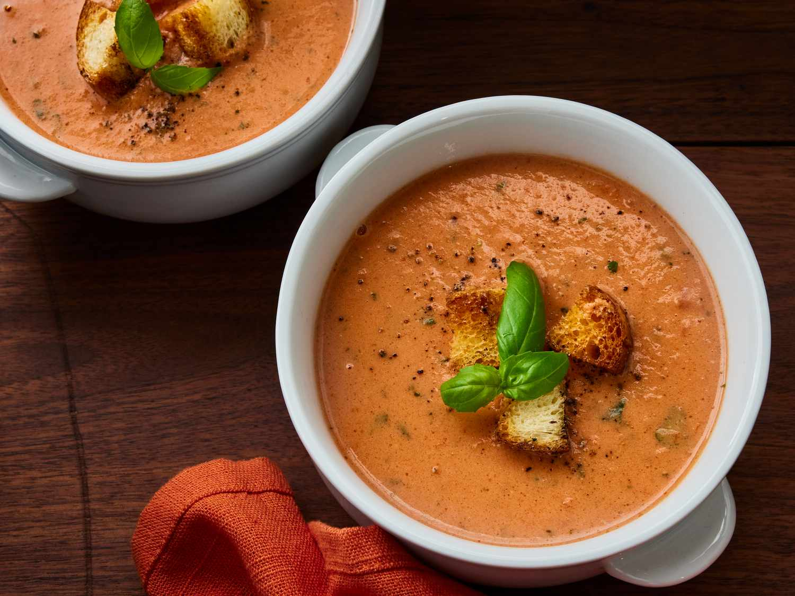

Creamy Tomato Basil Soup
Ingredients
- 2 tablespoons olive oil
- 1 onion (chopped)
- 4 cloves garlic (minced)
- 4 cups canned tomatoes (diced)
- 1 cup vegetable broth
- 1/2 cup heavy cream
- 1/4 cup fresh basil (chopped)
- Salt and pepper to taste
- 1 teaspoon sugar (optional)
0:00
0:00
Heat olive oil in a large pot, add onion and garlic, and saute until softened.
Add tomatoes, vegetable broth, and simmer for 10 minutes.
Puree the soup until smooth.
Stir in heavy cream, basil, salt, and pepper.
If desired, add sugar for a touch of sweetness.
Serve hot with fresh basil garnish.